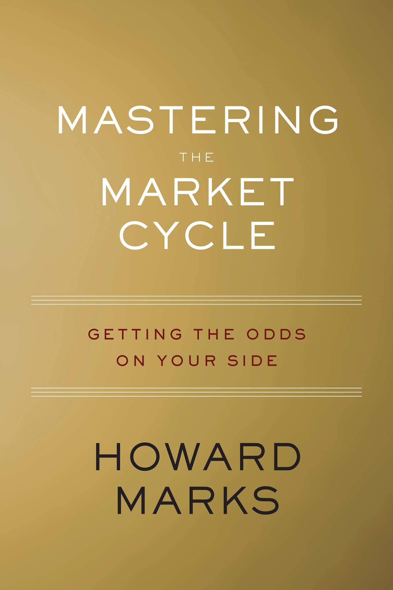

霍华德·马克斯1995年与布鲁斯·卡什（Bruce Karsh）共同创立橡树资本（Oaktree Capital Management）之前，已经在花旗银行和西部信托（TCW）管理不良债权与高收益债券业务近二十年。他的第一本书《投资最重要的事》（The Most Important Thing）出版于2011年，被巴菲特称为少数会让他放下手头一切先读的读物："每当我在邮件里看到霍华德·马克斯的备忘录，我会先打开读——总能学到点什么，他的书也一样。"（When I see memos from Howard Marks in my mail, they're the first thing I open and read. I always learn something, and that goes double for his book.）七年后，马克斯把自己四十多年管理周期性资产的经验，浓缩进了2018年出版的第二本书《周期：投资机会、风险、态度与市场周期》（Mastering the Market Cycle: Getting the Odds on Your Side）。中文版由刘建位翻译，中信出版集团2019年引进出版。
全书逐层讨论经济、企业盈利、信贷、不良债权、房地产与市场心理等周期，并追问它们为何一次次偏离均衡。马克斯的答案不是固定年限，而是因果链：好消息抬高信心，资本供应增加，贷款利差收窄、契约保护变松，低质量项目也得到融资；损失出现后，放贷者又从不计风险转为拒绝风险，收紧的信用反过来打击企业和资产价格。人的心理像钟摆，在贪婪与恐惧、风险容忍与风险厌恶之间摆动，幅度常大于基本面变化。政府的货币与财政政策可以加速或延缓某一阶段，却不能取消人的过度反应。他反复强调：投资者做不到稳定预测拐点，能做的是估计当前所处的位置，再改变进攻与防守的比例——"随着我们在周期中所处的位置变化，赔率也在变化。"
2008年雷曼兄弟倒下后的十五周里，传统资本市场几乎冻结，橡树资本没有宣称看见了最低点，而是以平均每周数亿美元的速度买入被迫抛售的公司债权。这个案例说明"掌握周期"不是日历择时：即使价格还可能下跌，只要债权的优先顺位、回收价值和收益率已经补偿了风险，恐慌中的赔率也可能优于繁荣期。反过来，当信贷随手可得、发行人能删掉保护性条款、投资者只因害怕错过而追逐收益时，良好的当期违约率并不能证明风险很低；它常常只是宽松周期尚未结束的结果。马克斯把风险定义为永久损失的可能性，而不是短期波动，因此周期判断最终仍要落到买价、资本结构和承受坏情景的能力上。
与偏重投资哲学的《投资最重要的事》相比，《周期》把钟摆拆成一组可以持续观察的证据：信贷利差的松紧、贷款契约的宽严、新股发行质量、杠杆收购能否轻易融资、媒体叙事和投资者对坏消息的反应。马克斯还把20世纪70年代的"漂亮五十"、1998年的长期资本管理公司、互联网泡沫和全球金融危机放在同一框架中，检查"这次不同"如何从少数真实变化滑向对价格的无限辩护。单个指标不能报出顶部或底部，多个指标同向时却能显示市场温度。书的限制也很清楚：它不提供量化阈值，"现在站在哪儿"仍依赖判断，而且市场可能在极端状态停留很久。它更适合用来校准仓位和风险预算，而不是生成买卖日期；读者若把每次判断、依据、反证、仓位上限和允许承受的最大损失写成可复核的清单，才不会在事后把任何结果都解释成周期。